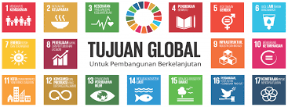
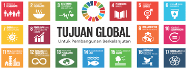

Tugas ini adalah proyek pembuatan website untuk IL Kecil yang menggabungkan beberapa mata pelajaran, yaitu TIK, IPS, dan PPKn. Selama mengerjakan tugas ini, saya telah mempelajari banyak hal menarik yang tidak hanya menambah wawasan, tetapi juga meningkatkan keterampilan saya, terutama di bidang teknologi. Salah satu topik utama yang saya pelajari adalah tentang kerja sama internasional. Saya mengetahui bahwa kerja sama internasional terdiri dari tiga jenis utama, yaitu kerja sama bilateral, kerja sama regional, dan kerja sama multilateral. Tugas ini adalah proyek pembuatan website untuk IL Kecil yang menggabungkan beberapa mata pelajaran, yaitu TIK, IPS, dan PPKn. Selama mengerjakan tugas ini, saya telah mempelajari banyak hal menarik yang tidak hanya menambah wawasan, tetapi juga meningkatkan keterampilan saya, terutama di bidang teknologi. Salah satu topik utama yang saya pelajari adalah tentang kerja sama internasional. Saya mengetahui bahwa kerja sama internasional terdiri dari tiga jenis utama, yaitu kerja sama bilateral, kerja sama regional, dan kerja sama multilateral. Kerja sama bilateral adalah bentuk kerja sama antara dua negara untuk mencapai tujuan tertentu, seperti perdagangan atau bantuan kemanusiaan. Kerja sama regional melibatkan beberapa negara di wilayah tertentu, misalnya ASEAN di Asia Tenggara. Sementara itu, kerja sama multilateral adalah kerja sama yang melibatkan banyak negara dari berbagai belahan dunia, seperti yang terjadi di Perserikatan Bangsa-Bangsa (PBB). Selain itu, saya juga belajar tentang Sustainable Development Goals (SDGs) atau Tujuan Pembangunan Berkelanjutan. SDGs adalah 17 tujuan yang dirancang untuk menciptakan dunia yang lebih baik dan lebih sejahtera. Beberapa tujuan SDGs yang paling penting meliputi pengentasan kemiskinan, pendidikan berkualitas, kesetaraan gender, aksi terhadap perubahan iklim, dan pelestarian lingkungan. SDGs memiliki hubungan erat dengan kerja sama internasional karena banyak dari tujuan tersebut hanya dapat dicapai jika negara-negara saling mendukung dan bekerja sama. Contohnya, dalam upaya mengatasi perubahan iklim, banyak negara harus bekerja sama untuk mengurangi emisi karbon dan melindungi ekosistem global.
Dalam proyek ini, saya tidak hanya belajar teori, tetapi juga mendapatkan pemahaman bagaimana kerja sama internasional dan SDGs diterapkan dalam kehidupan nyata. Saya membaca banyak contoh nyata, seperti bagaimana negara-negara membantu satu sama lain saat terjadi bencana alam atau bagaimana mereka bekerja sama dalam program vaksinasi global. Di sisi teknologi, saya mempelajari banyak keterampilan baru untuk pembuatan website. Saya belajar dasar-dasar HTML (HyperText Markup Language) untuk membuat kerangka halaman website. HTML membantu saya menyusun elemen penting seperti header, paragraf, dan gambar. Setelah itu, saya menggunakan CSS untuk membuat tampilan lebih menarik. CSS memungkinkan saya mengatur warna, font, tata letak, dan elemen desain lainnya agar website terlihat lebih menarik.Salah satu hal yang paling menarik adalah saat saya mempelajari cara membuat dropdown navigator. Fitur ini sangat penting karena memudahkan pengguna untuk menjelajahi berbagai bagian dari website dengan lebih cepat dan rapi. Pada awalnya, saya merasa kesulitan memahami kode-kode yang digunakan, tetapi setelah mencoba beberapa kali dan belajar dari Modul yang diberikan, saya berhasil membuat menu navigasi yang berfungsi dengan baik. Pengalaman ini sangat berkesan karena saya belajar menggabungkan teori yang saya pelajari di IPS dan PPKn dengan keterampilan teknologi dari TIK. Proyek ini mengajarkan saya cara menyajikan informasi secara profesional dan menarik melalui website. Saya juga menyadari pentingnya memanfaatkan teknologi modern untuk membantu menyelesaikan masalah global. Dengan memadukan ilmu pengetahuan dan teknologi, saya merasa lebih percaya diri untuk menghasilkan karya yang bermanfaat di masa depan.
 
